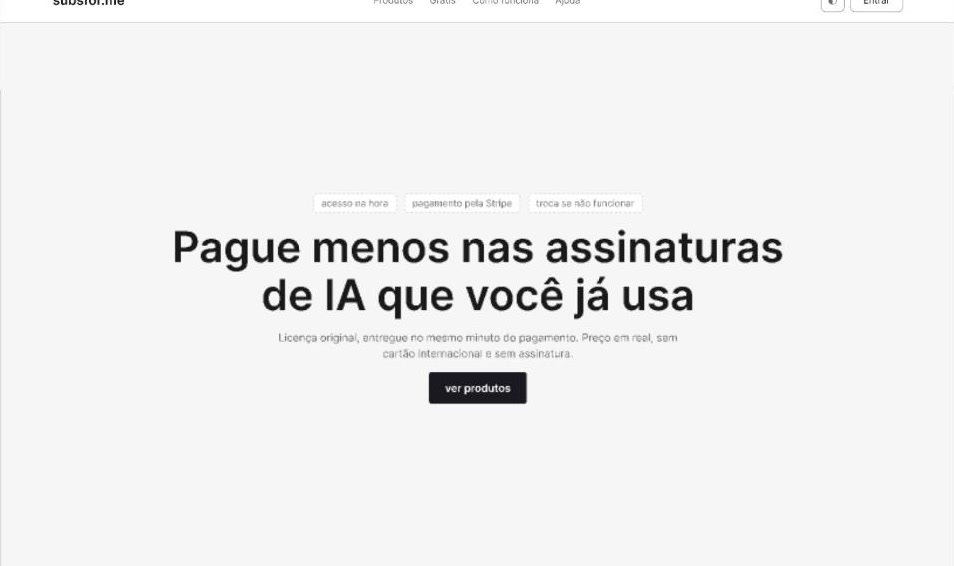
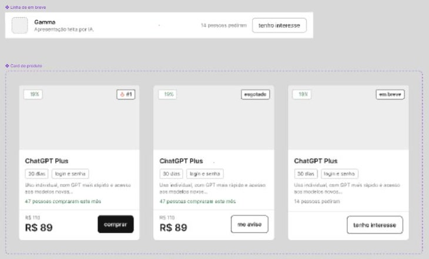
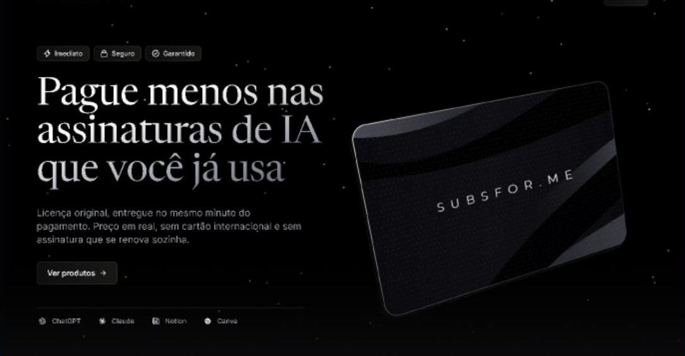
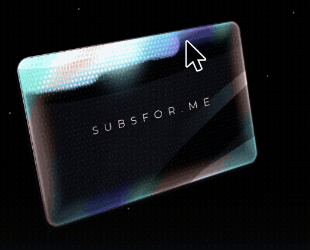

Semana da Tecnologia · UNASP 2026
ADS
Agent Engineer
Uma esteira de construção de software com agentes de IA
Eduardo Ribeiro
O problema
Quem não é programador pede um site para a IA e recebe código que não sabe avaliar.
> "cria um site de vendas pra mim"
Sem requisitos
Sem segurança
Sem registro das decisões
Para quem
Quem tem a ideia, mas não é engenheiro
Tem uma ideia
Empreendedor, professor, profissional de outra área.
Valida conversando
Responde perguntas e aprova telas. Sem ler código.
Recebe algo seguro
Segurança, testes e revisão já vêm na esteira.
Como funciona
9 etapas. Código só no final.
Etapa 01 · Problema e visão
O agente entrevista
Que problema esse app resolve, e na vida de quem?
Quem trabalha com IA assina várias ferramentas e paga o preço cheio em todas.
visao.md gerado e confirmado
Etapa 02 · Jornadas
O caminho de quem usa
Sistema, por trás
Confere o pagamento
Pede a licença
Entrega e guarda
Etapa 03 · Corte do MVP
O que entra primeiro
Agora
Vitrine
Conta e login
Pagamento
Entrega na hora
Depois
Influenciadores
Cupom
Comparar ferramentas
Nunca
Campo de cartão próprio
Custo do fornecedor visível
Etapa 04 · Wireframe em baixa fidelidade
Primeiro a estrutura, em cinza
Cada tela aprovada antes do código. 18 telas no subsfor.me.

Topo da vitrine

Card de produto: à venda, esgotado, em breve
Etapa 04 · Da baixa para a alta fidelidade
Depois o visual final, ainda no Figma

Alta fidelidade
Etapa 05 · Requisitos
A tela aprovada vira regra escrita
exemplo: subsfor.me
O que o sistema faz · 53
RF01
Preço em real na vitrine
RF02
Selo nos 3 mais vendidos
RF04
4 produtos no celular
Como precisa ser · 14
Nunca recebe o número do cartão
Esconde o custo do fornecedor
Bloqueia após 5 senhas erradas
Etapa 06 · Arquitetura e ADR
Cada decisão vira um arquivo
ADR = registro de decisão
decisoes/
0036-loja-inteira-na-cloudflare.md
0037-codigo-no-github.md
0038-tres-ambientes.md
0040-dominio-subsfor-me.md
0152-mais-vendidos-dos-ultimos-7-dias.md
0184-card-so-com-dois-estados.md
… 187 no subsfor.me
0036 · em vigor · 22/09/2026
Loja inteira na Cloudflare
Decisão
O servidor roda no Workers.
Por quê
Servidor tradicional exigiria máquina alugada.
Etapas 07 a 09 · Código, testes e entrega
Toda mudança passa por 3 conferências
Se uma conferência falhar, a mudança não entra no sistema.
A prova
subsfor.me: construído pela esteira, já no ar
dev.subsfor.me

Aponte a câmera e veja a esteira
github.com/duribeiro/project-template